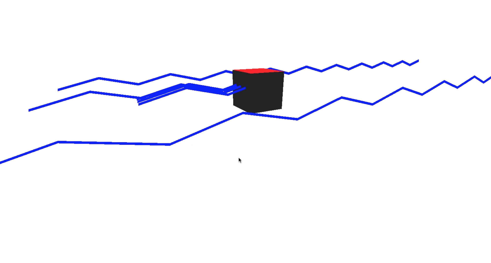
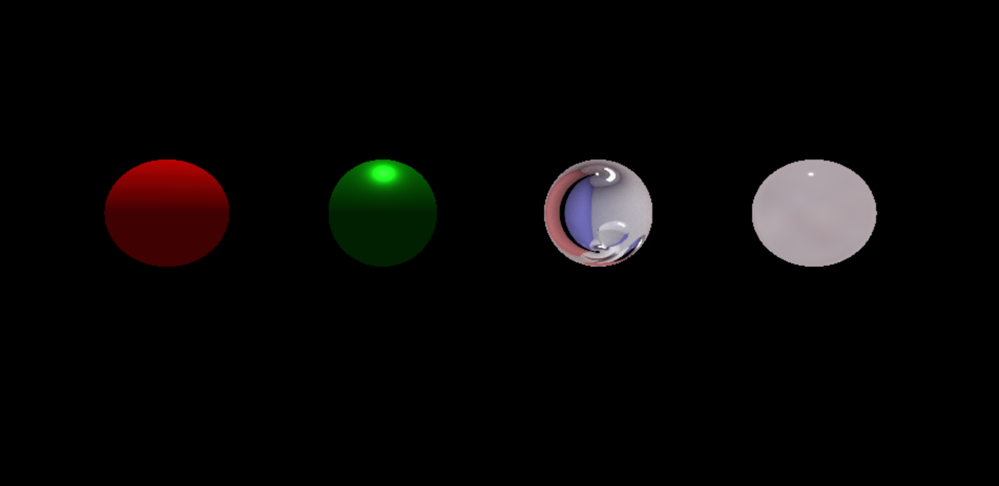
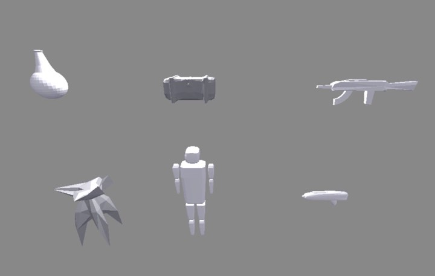

Escape from Planet Eshleman
Marcus Lee, 25812787; Michael Lu, 25464293; Noah Lopez, 25709092
Summary + Reflection
In exploring our options implementing our original game plan, we realized that, outside of the game design portion, it was difficult to tackle a technical challenge that was within scope of the class without literally starting from scratch. So, without reinventing the wheel, and after consultation with TA's and more brainstorming, we decided to pivot our project towards implementing raytracing as a game mechanic. The core idea is that we have different weapons that shoot different laser types, and different enemy types that correspond to those weapons. If you pick the right weapon, it will kill the enemy. Otherwise, the laser bounces off the enemy in a manner dependent on its material/BRDF, and can do damage to you or other enemies. Our main goal then has pivoted to implementing this functionality: kill if the laser is correct, and raytrace + reflect otherwise. .
Preliminary Results:
In working towards this new goal, so far we have split the work into implementing the raytracing/reflect mechanic, building character models
and exploring different materials. We have basic prototypes for all three of these aspects, as seen below:
|

|

(Ideal Reflective), and Glass (Refractive) |
|

Constructed with blender imported to three. |
Thus, what is left for us to do is put these elements together into a single program and refine them
for aesthetic appeal and realism (e.g. using better resolution textures to apply onto the glass sphere as well as the scene background).
New Work Plan (based on current progress):
Week 1: Refined original project idea to utilize ray tracing as its core gameplay mechanic. Looked into different webGl frameworks (three.js, playCanvas etc.)
Week 2: Decide to work with three.js. Spent time familiarizing ourselves with three.js.
Week 3: Split up work into, raytracing mechanic, models, and textures. Got preliminary versions of each up and running.
Week4/5 (4/24 - 5/1): Refining ray tracing mechanic, textures and models and then merging all three aspects together. Work on poster and final video.
Video